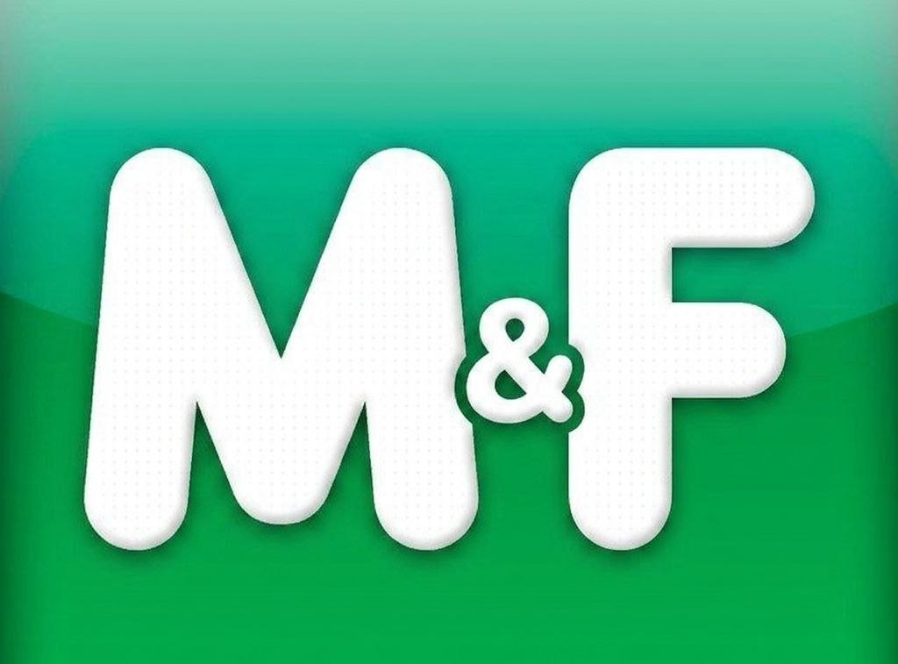

FlowChan — це спільнота людей у соцмережі Мрія, які об'єднані слоганом "FlowChan" у статусі.
Про групу
Ми займаємося створенням хаотичних мемів, артів та щитпостів. Це творчість, яку розуміємо ми, або просто якісні загальнодоступні меми.
Сенс: Абсурдні меми та вільна творчість.
Ідеологія: Радикальний пофігізм.
Ідеологія: Радикальний пофігізм.
Наші принципи
- Френдлі вайб: Учасники мають бути дружніми.
- Захист без агресії: При будь-яких нападах на FlowChan ми не проявляємо агресію у відповідь, а лише захищаємо свою ідею.
- Повага до правил: Ми притримуємося правил використання Мрії. Наша мета — просувати творчість у топи, а не спамити.
Хештеги
Шукайте наші пости за тегами: